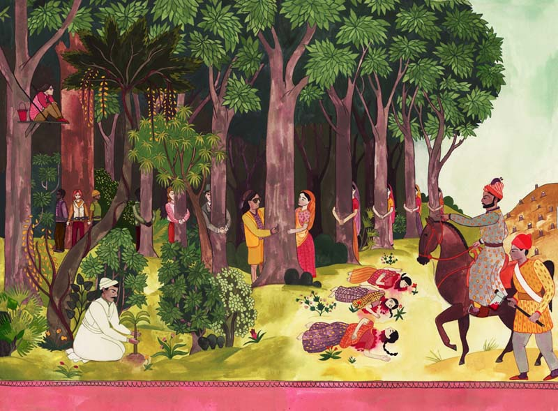
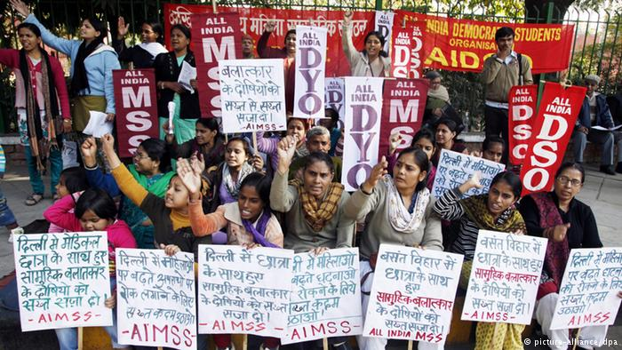

"There's no such thing as the voiceless, only the deliberately silenced and the preferably unheard."
- Arundhati Roy
When white women speak out on 'women's issues' whose issues are they speaking on behalf of? When these women say that they believe that men and women should have equal rights, which men and which women do they mean?
The famous 2015 documentary India's Daughter, made by Leslee Udwin, and the associated global campaign with the derived name 'Daughters of India' raise some helpful and interesting points. However, India's patriarchs including members of the government and the most anti-feminist forces in India have always referred to Indian women as 'India's daughters'. It is ironic, and shows a worrying level of cultural ignorance, that a campaign against gender violence should do the same. Why should a global campaign belittle Indian women who are individuals in their own right by calling them 'daughters'?
My critique of white feminism is not part of a discussion about race. As articulated by the Myriam Francois-Cerrah of Oxford University, 'it is rather [a discussion] of a political category, implying an unequal balance of power between dominant white culture, and subaltern identities.' 'White' feminism is not about the colour of people's skin, but instead refers to people's identification with the dominant power which continues to subjugate people of colour to a second class status, where women of colour are downgraded even further.
An article written by the Guardian describes the documentary to be 'a powerful, brave and heart-wrenching documentary, [which] provokes grief and anger but also pity for the ignorance', conveying India as a place of ignorance and brutality towards women. While it inspires shock and pity, it also reinforces the notion that the white, western world is 'civilised' in comparison to the moral degeneracy and backwardness of India.
I am not denying that in India there is violence and discrimination against women. However, it does not help for people in other countries to imagine that such brutality is India's 'cultural' problem or that gender violence is 'worse out there in India'. Classifying gender violence in terms of being 'worse' in India has 'value' only in the false sense of reassurance it brings the west. Feminism should not be about 'saving' women from the 'global south', it should be about viewing them as true equals in a shared struggle without being tokenistic and patronising. Feminism should not come in the form of 'aid', but rather of solidarity with each other’s campaigns, protests and sharing of experiences. Feminism should allow women of colour to have a voice in discussions too.
Without this inclusion, not only do you end up speaking for women who you simultaneously distance yourself from, but you also prevent yourself from recognizing the 'brutal attitudes' that are pervasive in your own culture. Wherever we are, recognizing the 'brutal attitudes' that have been normalised in our culture is important. It is easy to be shocked by those attitudes when they are distantly located in an exotic 'Other'; it is much harder to recognize and confront them in our own culture.

The white 'liberal' secular framework is not the only acceptable lens through which women can articulate their struggles. Indians often reject 'feminism' as a western imported concept. Western feminists and womens' groups are perceived to do little to help women in India. Indian women are not voiceless and incompetent; Indian women showed themselves to be strong when they formed the backbone of the Chipko - or 'ecofeminism' - movement of the 1970s.
'Feminism' is widely viewed as 'another form of cultural imperialism design to alienate native women from the real source of their power' - their own culture. How do we reconcile the fact that white women were active participants and advocates of the system of slavery in the US and of colonial empires and arguably continue to exploit us through the continued legacy of the global economic hegemony that western imperialism created?
This is why 'India's Daughter' does not present a view representative of Indian society's attitudes towards women. Western notions of gender relations cannot be imposed on a culture and society that is vastly different. Gender in India is more complex than it seems not least because India is the equivalent of a continent in size, population and cultural diversity. Barkha Dutt said that while the world might celebrate the possibility of Hilary Clinton as the first US female President, Indira Gandhi was Prime Minister of India four decades ago. Dutt declared, 'Conversations about why there hasn't been a female President are not happening in India; India has paid maternity leave' - which the US famously does not.
When I visit India I think of it as a paradox; it is an odd fusion of old and new; there is a tension between moving forward and maintaining tradition.
Although Indian religion such as Hinduism provides little theological impetus for struggles for equality, religion alone is not responsible for the problems of gender in India. It is more often the fault of poverty and authoritarianism; which are by-products of exploitation and imperialism. Any feminist agenda that ignores the complex ways in which gender intersects with other aspects of one's identity and circumstances cannot claim to represent the views and experiences of all women. I feel solidarity with the women resisting imperialism, exploitation, war and patriarchy; with the Indian women fighting back against rape culture, inheritance laws and the practice of widow immolation called sati. This is at the core of the feminism I believe in.
I now understand why I spent most of my youth trying to fit in, while being self-conscious of my differences to the people around me. Why at university, despite thinking I would find my place in womens' circles, I found my voice did not resonate there.
I believe that we should talk about 'decolonizing' feminism to stop it perpetuating and reinforcing white supremacy and further marginalising women of colour.
The feminist agenda should be one which highlights, for example, that there are only 17 black female professors in the UK. If a university feminist initiative aims to be progressive and emancipatory, it must show solidarity with and seek to improve the lives of all women, not just those with many privileges despite their gender. These initiatives need to be more diverse and embrace alternative perspectives; they should be committed to the empowerment of women least represented in the academy.

I am fighting for our moment of recognition. As women of colour, we should be listened to, heard and understood by a society, which seems to systematically ignore us yet want to 'save' us. Our voices matter as much as other women's.
The subaltern woman can speak; listen to her.